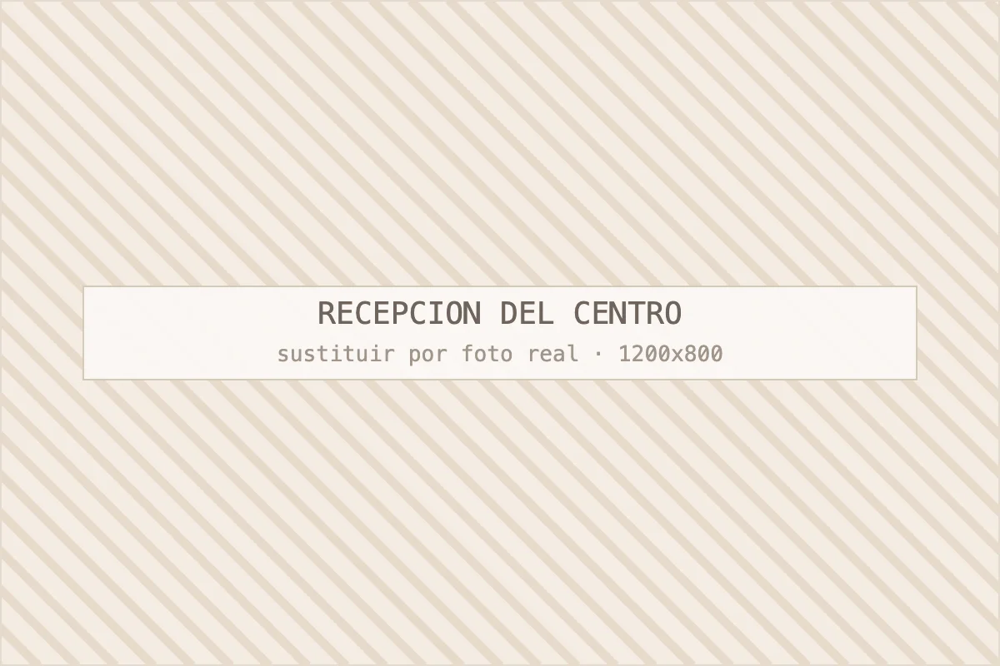

El centro y el equipo
Un centro pequeño en el Eixample, con nombre y cara
Centro Estética Barcelona lo dirige Jeisy, esteticista colombiana con más de diez años de práctica. Una cabina, pocas clientas al día y tiempo real por sesión.

¿Quién es Jeisy y por qué monta este centro?
Jeisy es esteticista, colombiana, y lleva más de una década trabajando estética corporal y facial, los últimos años en su propia cabina en el Eixample de Barcelona.
Aprendí la técnica manual en Colombia, donde la maderoterapia y el trabajo con las manos son la base del oficio, y llegué a Barcelona con esa forma de hacer las cosas. Después de años en centros de otros —agenda solapada, sesiones recortadas, presión para vender bonos— decidí montar algo pequeño donde pudiera trabajar como creo que hay que trabajar: una clienta por franja, tiempo de verdad en cabina y decir la verdad aunque cueste una venta.
Lo que más nos preguntan es si se nota. Mi respuesta es siempre la misma: te mido el primer día y te vuelvo a medir en la quinta sesión.
Jeisy, responsable de Centro Estética Barcelona¿Cómo trabajamos en cabina?
Con protocolo escrito, mediciones en la sesión 1, 5 y 10, y una sola clienta por cabina y franja horaria. Nada de eso es marketing: es lo que permite que el resultado sea comprobable.
La valoración previa es gratuita y dura entre veinte y treinta minutos. Ahí revisamos antecedentes médicos, medicación y cirugías, miramos la zona o la piel, tomamos medidas si toca y salimos con un plan: técnica, número de sesiones, calendario y precio. Si tu caso no es de cabina —una flacidez que solo mejora con cirugía, una lesión cutánea que debe ver un dermatólogo— te lo decimos y te orientamos.
Puedes ver el detalle de cada protocolo en el índice de servicios y los precios en tarifas orientativas.
¿Dónde estamos y cómo es el centro?
Estamos en Gran Via de les Corts Catalanes, 556, Principal 2, en el tramo de Gran Via entre Rocafort y Entença, a siete minutos andando de Plaça d'Espanya.
Es un principal de finca del Eixample, con cabinas individuales y sin sala de espera masificada: si llegas cinco minutos antes, no vas a coincidir con una cola. El barrio tiene aparcamiento de rotación cerca, en el entorno de Tarragona y Plaça d'Espanya, y las paradas de metro de Rocafort (L1) y Espanya (L1, L3, L8) quedan a menos de siete minutos.
La mayoría de nuestras clientas viene del propio Eixample, de Sants-Montjuïc y de Les Corts.
¿A qué nos comprometemos?
- Valoración gratuita con plan y precio por escrito antes de contratar.
- Mediciones objetivas en corporal y revisión a mitad de ciclo.
- Una clienta por cabina y por franja: sin sesiones recortadas.
- Cosmética profesional con ficha técnica disponible.
- Decirte cuando un tratamiento no es para ti.
- Bonos sin caducidades abusivas ni condiciones escondidas.

Preguntas frecuentes
Sobre el centro y el equipo
Lo que preguntan quienes todavía no nos conocen.
¿Quién dirige el centro?
Jeisy, esteticista de origen colombiano con más de diez años de práctica en estética corporal y facial. Es la responsable de los protocolos del centro y la persona que hace la mayoría de las valoraciones. Si pides cita, es muy probable que te atienda ella.
¿Cuánto tiempo lleva abierto el centro?
Más de diez años trabajando en Barcelona, con la cabina actual en Gran Via de les Corts Catalanes 556, en el Eixample. En ese tiempo hemos abierto ficha a más de 3.000 clientas y mantenemos una valoración media de 4,7 sobre 5 en Google.
¿Qué formación tiene el equipo?
Formación reglada en estética y actualización anual en técnica manual corporal, aparatología y micropigmentación. Reservamos presupuesto de formación cada año porque la técnica cambia y las modas de tratamiento también. Lo que aprendemos se aplica en cabina antes de anunciarlo.
¿Trabajáis con marcas concretas de cosmética?
Trabajamos con cosmética profesional de cabina y podemos mostrarte la ficha técnica de cualquier producto que te apliquemos. No vendemos marca propia ni presionamos para comprar producto: si prefieres una rutina de farmacia, te la pautamos igual.
Pedir cita
Ven, mira el centro y decide después
Cuéntanos qué te preocupa y te decimos con franqueza qué tratamiento tiene sentido en tu caso, cuántas sesiones necesitarías y cuánto costaría. Si creemos que no vas a notar resultados, te lo diremos.
Última actualización: · Contenido revisado por Jeisy, responsable de Centro Estética Barcelona.